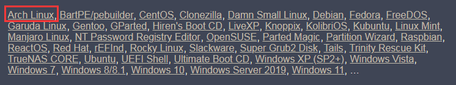
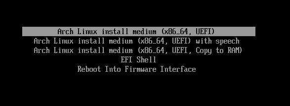
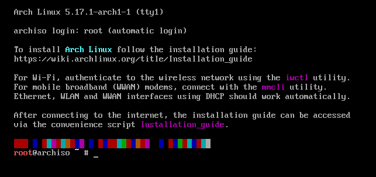
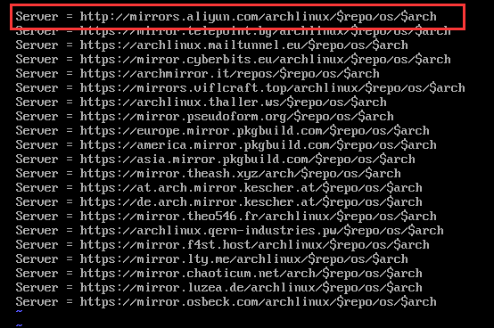

官方 wiki 安装中文指导：https://wiki.archlinux.org/title/Installation_guide_(简体中文)
最好还是以英文版的为基准，因为 ArchLinux 是一个激进的系统，更新比较快，可能刚写完这篇笔记，转头已经有些对应不上了，哈哈哈。
# 系统镜像
官方镜像下载地址：https://archlinux.org/download/
当然，也可以去各大高校提供的镜像源网站下载。
# 启动盘制作
1、windows 平台
可以使用 Rufus：https://rufus.ie/zh/
这是一款开源、免费、小巧（1.1mb）纯粹的系统启动盘制作工具。
目前所支持的 ISO 镜像如下：

2、Uinx 平台
类 Unix 系统可以直接使用 dd 命令来制作启动盘。
dd 命令使用可参考：https://www.runoob.com/linux/linux-comm-dd.html
3、多平台
可以使用开源的 etcher：https://www.balena.io/etcher/
然后本篇文章是基于官方指导的总结分析安装的笔记，如下开始正式安装配置，因为是以官方 wiki 安装为指导，所以下面用到的操作的标题将一一对应官方 wiki 的标题，没用到的将忽略不写，以及需要增加的将给出说明。目前使用的镜像版本：
archlinux-2022.04.01-x86_64.iso
# 引导安装
Arch 的启动引导过程有两种：BIOS 和 UEFI 系统，这两者的引导过程是完全不同的。在 Arch 中它们的引导加载及区别可看：https://wiki.archlinux.org/title/Arch_boot_process
目前大部分设备的引导方式主要分为 UEFI 引导 + GPT 分区表 和 BIOS(LEGACY) 引导 + MBR 分区表 这两种，而在新的机器里大部分都采用了 UEFI/GPT 引导的方式，当然，同时也兼容 BIOS/MBR 。
UEFI 进入：

BIOS 进入：

启动安装后，最终界面出现的效果是一样的：

# 验证引导模式
键入如下命令：（ ls ：表示列出目录内容；后面的路径可以利用 Tab 键 自动补全，即键入命令或文件名的前几个字符，然后按 [Tab] 键）
ls /sys/firmware/efi/efivars
如果命令结果显示了目录且没有报告错误，则系统以 UEFI 模式引导。
如果目录不存在，则系统可能 **（注意是可能，并不一定确是 BIOS 模式）** 以 BIOS 模式 (或 CSM 模式) 引导，如显示：
ls: cannot access '/sys/firmware/efi/efivars': No such file or directory
对于一些不是新的 / 格式过的磁盘，可能就不太适用了，当然，最好方法就是查看安装的主分区磁盘的属性。
# 连接到因特网
1、检查网络接口是否启用
ip link
2、连接到网络
- 有线：连接网线，并保证上级路由有网。
- 无线：使用 iwctl 验证无线网络，具体操作点击链接查看。
3、配置网络连接
动态：需要支持 DHCP，然后执行以下命令。
dhcpcd静态：直接按照 静态 IP 地址 这个链接进行操作。
4、检查网络连接
在确认无误完成上面的操作后，通过 PING IP 来检查：
ping archlinux.org
**note：** 关于网络部分的，详情请看 https://wiki.archlinux.org/title/Network_configuration
# 更新系统时间
执行：
timedatectl set-ntp true
然后正常情况下是并没有输出的，所谓没有消息就是最好的消息，这就是 Linux/Unix 系统的设计思想。
最后，执行如下命令来检查服务状态：
timedatectl status
# 建立硬盘分区
系统如果识别到磁盘，就会将其分配为一个块设备，如 /dev/sda 、 /dev/nvme0n1 或 /dev/mmcblk0 等等。然后可以执行如下命令查看：
fdisk -l
然后，针对不同的引导方式，其分区布局是不一样的，以官方给出的分区为例：
UEFI 与 GPT
挂载点 分区 分区类型 建议大小 /mnt/boot /dev/efi_system_partition EFI 系统分区 至少 300 MiB [SWAP] /dev/swap_partition Linux swap (交换空间) 大于 512 MiB /mnt /dev/root_partition Linux x86-64 根目录 (/) 剩余空间 BIOS 与 MBR
挂载点 分区 分区类型 建议大小 [SWAP] /dev/swap_partition Linux swap (交换空间) 大于 512 MiB /mnt /dev/root_partition Linux x86-64 根目录 (/) 剩余空间 然后在这里拓展一下
MiB跟MB这两个单位，MB是国际单位制 SI 制定的十进制标准单位制，这个 M 是 1000K，而MiB是国际电工委员会 IEC 制定的二进制标准，这个 M 是 1024K 。参看：https://physics.nist.gov/cuu/Units/binary.html其它的布局实例可看：https://wiki.archlinux.org/title/Partitioning_(简体中文)# 布局示例
在了解上面的布局后，然后我们常用的引导方式有 UEFI 引导 + GPT 分区表 和 BIOS(LEGACY) 引导 + MBR 分区表 这两种，所以下面分开说明：
BIOS/MBR
这种方式相对于另一种比较简单，所以就先说了。
首先，先来了解一下
[SWAP]挂载点和/mnt挂载点：[SWAP]：swap 分区通常被称为交换分区，这是一块特殊的硬盘空间，即当实际内存（物理内存，可以理解为内存条容量）不够用的时候，操作系统会从内存中取出一部分暂时不用的数据，放在交换分区中，从而为当前运行的程序腾出足够的内存空间（有点类似于 windows 系统下的虚拟内存）。也就是说，当内存不够用时，我们使用 swap 分区来临时顶替，等到那些程序要运行时，再从 swap 中恢复保存的数据到内存中。这种 “拆东墙，补西墙” 的方式应用于几乎所有的操作系统中。使用 swap 交换分区，显著的优点是，通过操作系统的调度，应用程序实际可以使用的内存空间将远远超过系统的物理内存。
那么 swap 分区到底设置成多大才最优？少了又觉得不够，多了又感觉浪费，那么我们可以参考 Redhat 官方文档中 关于 swap 分区大小设置的建议：
物理内存 建议的交换空间大小 如果开启休眠功能建议的交换空间大小 ⩽ 2GB 内存的 2 倍 内存的 3 倍 > 2GB – 8GB 等于内存大小 内存的 2 倍 > 8GB – 64GB 至少 4G 内存的 1.5 倍 > 64GB 至少 4G 不建议使用休眠 最后结合日常使用，一般来说可以按照如下规则设置 swap 大小：
- 4G 以内的物理内存，SWAP 设置为内存的 2 倍，不超过 4G。
- 4-8G 的物理内存，SWAP 等于内存大小。
- 8-64G 的物理内存，SWAP 设置为 8G。
- 64-256G 物理内存，SWAP 设置为 16G。
/mnt：全称mount可直接理解为 “挂载”，用于存放手动挂载的硬件。这部分是根目录/下的目录，用来挂载文件系统。一般的 Linux 根目录展开如下图：

然后按照官方的说明，是想把将根磁盘卷挂载到
/mnt目录下，即/mnt变成/根目录。
好了，了解完后下面正式开始。
执行命令：
fdisk /dev/sdx （sdx可以为sda、sdb等，具体以你实际需要挂载的磁盘名称为准）接着你就进入了
fdisk操作环境，为了获取该命令下的操作功能，根据提示输入m并回车查看各命令的作用：
在
fdisk操作环境下：1、对于一个全新的磁盘（格式化了），输入
o来创建一个全新的MBR分区表（因为这里是 BIOS 引导）；如果是旧磁盘（要么原本有MBR分区表，要么不是MBR属性DOS的），那对于非MBR分区表可能得更改分区表或者格式化，而已有MBR分区表的直接执行第 2 步。2、输入
n创建一个新的分区，首先会让你选择类型分区，输入p选择主分区，回车接着选择分区号，这里一般直接回车使用默认数值，这样可以避免自己定义出现冲突；紧接着选择开始起扇区地址，如果不知道原有区域划分情况，那一般直接回车使用默认数值即可；随后，输入结束扇区地址或者容量大小，这里决定了你为该分区创建的容量大小；我们按照表格顺序创建分区，那这第一个就是swap交换分区，例如我分配的是 8G 容量，那可以直接输入容量大小：+8G。3、创建完毕后，可以输入
p来查看创建的分区。4、重复第 2 项创建根目录分区和第 3 项确认最后的分区信息，至此就有两个分区（对应表格）。
5、最后输入
w将之前所有的操作写入磁盘并生效。UEFI/GPT
与上一种引导方式相比，根据表格显示，只多了一个 EFI 系统分区，然后了解一下这个挂载点：
/mnt/boot：上面说了官方是想把将根磁盘卷挂载到/mnt目录下，那这个 boot 引导自然就挂载到了新的/mnt目录下了。
在该引导模式下的操作就如下。
执行命令如下进入
fdisk操作环境：fdisk /dev/sdx （sdx可以为sda、sdb等，具体以你实际需要挂载的磁盘名称为准）在
fdisk操作环境下：1、对于一个全新的磁盘（格式化了），这里则输入
g来创建一个全新的GPT分区表（因为到这里是 UEFI 引导）；同样的如果是旧磁盘那跟上面的 BIOS 引导操作差不多，只不过这里是GPT属性了。2、输入
n创建一个新的分区，让你选择分区号 **（UEFI 比 BIOS 少了类型分区选择）**，这里一般直接回车使用默认数值，这样可以避免自己定义出现冲突；紧接着选择开始起扇区地址，如果不知道原有区域划分情况，那一般直接回车使用默认数值即可；随后，输入结束扇区地址或者容量大小，这里决定了你为该分区创建的容量大小；我们按照表格顺序创建分区，那这第一个就是/mnt/boot引导分区，例如我取的是 512MiB 容量，那可以直接输入容量大小：+512M。3、创建完毕后，可以输入
p来查看创建的分区。4、重复第 2 项和第 3 项两次，分别创建
[SWAP]和/mnt，至此就有三个分区（对应表格）。5、最后输入
w将之前所有的操作写入磁盘并生效。


# 格式化分区
EFI 系统分区（仅对于 UEFI/GPT 引导方式）
使用
mkfs.fat命令将其格式化为 Fat32：mkfs.fat -F 32 /dev/sdxY （sdxY为上面创建的 EFI 系统分区符）swap 交换分区
如果有创建，则请使用
mkswap命令将其初始化：mkswap /dev/sdxY （sdxY为上面创建的交换空间分区符）/mnt根目录分区执行以下命令创建一个 Ext4 文件系统：
mkfs.ext4 /dev/sdxY （sdxY为上面创建的根分区符）
# 挂载分区
1、将根磁盘卷挂载到 /mnt ，执行：
mount /dev/sdxY /mnt （把 sdxY替换为上面创建根分区符）
2、如果创建了 swap 交换空间卷，执行：
swapon /dev/sdxY （把 sdxY替换为上面创建的交换空间分区符）
3、对于 UEFI 系统，挂载 EFI 系统分区：
mkdir /mnt/boot
mount /dev/sdxY /mnt/boot （把 sdxY替换为上面创建的 EFI 系统分区符）
# 选择镜像
文件 /etc/pacman.d/mirrorlist 定义了软件包会从哪个镜像源下载。在列表中越前的镜像在下载软件包时有越高的优先权。
各地区镜像源获取：https://archlinux.org/mirrorlist/ ，然后点击生成：

编辑 /etc/pacman.d/mirrorlist 文件，执行：
vim /etc/pacman.d/mirrorlist
然后进入 VIM 环境，输入 i 进入编辑状态，然后根据上面生成提供的镜像表，选择几个放到文件最顶端，在这里笔者选择阿里云镜像：

如果其速度不佳，可以手动指定其他镜像源，像中科大或者清华的放在最上面即可：
Server = https://mirrors.ustc.edu.cn/archlinux/$repo/os/$arch
Server = https://mirrors.tuna.tsinghua.edu.cn/archlinux/$repo/os/$arch
然后，按 Esc 键退出编程，最后输入 :wq 保存退出。
关于 vim 命令的使用，可看：https://www.runoob.com/linux/linux-vim.html
# 安装必需的软件包
使用 pacstrap 脚本，安装 base 软件包和 Linux 内核以及常规硬件的固件：
pacstrap /mnt base base-devel linux linux-headers linux-firmware （base-devel在 AUR包的安装是必须的）
# Fstab 配置
生成自动挂载分区的 fstab 文件，执行命令：
genfstab -U /mnt >> /mnt/etc/fstab
然后 cat 一下检查生成的 /mnt/etc/fstab 文件是否正确：
cat /mnt/etc/fstab
执行后将显示各分区挂载情况及属性信息。
# Chroot 配置
Change root 到新安装的系统：
arch-chroot /mnt
执行了这步以后，我们的操作都相当于在磁盘上新装的系统中进行。
# 时区配置
设置时区：
ln -sf /usr/share/zoneinfo/Region（地区名）/City（城市名） /etc/localtime
eg：以上海为例，执行 ln -sf /usr/share/zoneinfo/Asia/Shanghai /etc/localtime
然后运行 hwclock 以生成 /etc/adjtime ：
hwclock --systohc
# 本地化配置
程序和库如果需要本地化文本，则需要根据区域设置 Locale，以明确规定地域、货币、时区日期的格式、字符排列方式和其他本地化标准。
需在这两个文件设置： locale.gen 与 locale.conf 。
通过前面的 Chroot 配置，我们已经处于 chroot 环境下了，这就意味这现在所在的系统中只有一些最基本的包（组件），而 VIM 组件并未包含在里面，这时候就需要自己安装组件包了。利用 Archlinux 下非常强大的包管理工具 pacman ，其安装包的命令格式为 pacman -S 包名 ， pacman 会自动检查这个包所需要的其他包（即为依赖）并一起装上。
然后我们安装 VIM 组件，执行：
pacman -S vim
1、利用刚安装的 vim ，编辑 locale.gen 文件：
vim /etc/locale.gen
找到 zh_CN.UTF-8 UTF-8 、 en_US.UTF-8 UTF-8 这两行，去掉注释并保存。
紧接着执行 locale-gen 以生成 locale 信息：
locale-gen
2、然后创建 locale.conf 文件，并 编辑设定 LANG 变量，
echo LANG=en_US.UTF-8 > /etc/locale.conf
# 网络配置
创建 /etc/hostname 文件，并设定的一个 myhostname ：
echo myhostname > /etc/hostname （myhostname是你想要为该系统设置的名称）
这步在我目前使用的功能里好像没用到。。。
然后，在官方文档中有一条说明：
请注意，目前的 base 不含有任何网络管理工具。对于新安装的系统环境，请接着完成网络配置，配置过程中可能包括要安装合适的网络管理软件。
因此，我们需要安装网络配置管理包（DHCP 客户端和 netctl 网络管理器）：
pacman -S dhcpcd netctl
# Root 密码
Root 是 Linux 中具有最高权限帐户，有些敏感的操作必须通过 Root 用户进行，比如使用 pacman 命令。
执行以下命令，然后根据提示输入两次密码即可（注意输入是不显示出来）：
passwd root
# 安装引导程序
如果是 Intel 或 AMD 的 CPU，启用 微码 更新：
Intel
pacman -S intel-ucodeAMD
pacman -S amd-ucode
接着，官方推荐的引导加载是 GRUB （其他的引导加载可看：引导功能比较），因此我们对其安装并配置，不同的引导系统，其操作不一样：
BIOS/MBR
1、安装
grub：pacman -S grub2、部署
grub：grub-install --target=i386-pc /dev/sdx （sdx为要安装 GRUB 的磁盘，注意不是分区）UEFI/GPT
1、安装
grub和efibootmgr：pacman -S grub efibootmgr2、部署
grub：grub-install --target=x86_64-efi --efi-directory=esp --bootloader-id=GRUB （这里的 esp 替换成挂载点）像在这里，那就是：
grub-install --target=x86_64-efi --efi-directory=/boot --bootloader-id=GRUB
最后，不管是哪个引导方式，都执行第三步：
3、生成配置文件：
grub-mkconfig -o /boot/grub/grub.cfg
执行后，最后显示 done 即完成操作。
note：这一步是至关重要的一步，请检查是否正确安装好引导加载程序后再重新启动，否则下次重启后将无法正常进入系统。
# 重启
最最最后，你需要进行重启来启动已经安装好的系统。
1、输入以下命令退出 chroot 环境：
exit
2、手动取消挂载的分区（这有助于发现任何「繁忙」的分区）：
如果挂载了 /mnt/boot ，先 umount -r /mnt/boot ，再 umount -r /mnt ，否则直接 umount /mnt 。
umount -r /mnt/boot
umount -r /mnt
3、执行重启：
reboot
# Other
另外一些比较详细的安装教程：
Arch Linux 安装使用教程
以官方 Wiki 的方式安装 ArchLinux